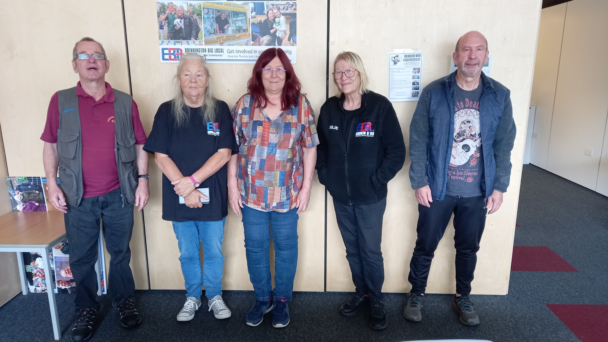
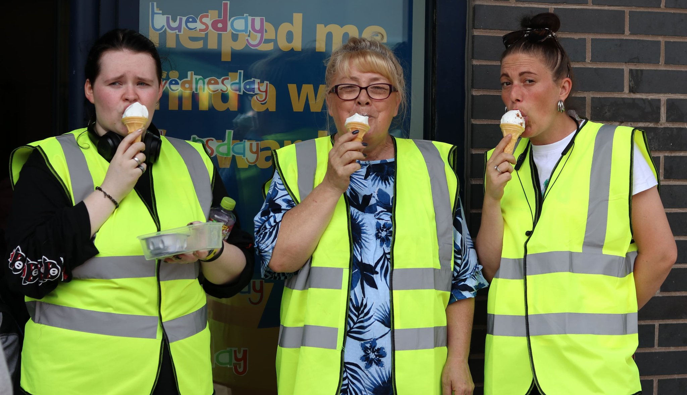

About Brinnington Big Local
Brinnington Big Local is a groundworks project situated in the heart of the Brinnington community, serving as a hub for support, guidance, and funding for grassroots community projects. Our organization is dedicated to fostering a thriving and connected community, with a mission to create a lasting impact that enhances the quality of life for residents.
Our Vision
We aspire to empower and unite our community, addressing a range of needs and challenges. Our initiatives focus on tackling issues such as food poverty, anti-social behavior, financial hardship, domestic abuse, unemployment, and health and well-being. We work tirelessly to create positive change and lasting solutions.

Our Commitment
At Brinnington Big Local, we value the input and suggestions of our residents. Your feedback is instrumental in shaping our future projects and making a greater impact on the community. We invite you to share your thoughts and ideas, which you can do through our Feedback and Suggestions page.
Meet Our Committee
Get to know the heart of our organization – the dedicated individuals who selflessly drive our mission forward, shaping a better future for our community.
Our Committee is a group of passionate and skilled local people who lead the way. They're the driving force behind our projects, ensuring that our community's needs are met and turning our shared vision into a reality.
Learn More about Our CommitteeExplore Volunteering Opportunities
Our Volunteers are the unsung heroes, the heart and soul of our community initiatives. They are individuals who generously invest their precious time, unwavering dedication, and unique expertise in making a positive impact on the lives of others. These remarkable individuals are the driving force behind many of our essential tasks.
From registering new members to preparing nutritious and delicious packed lunches for our young community members, our Volunteers take on a myriad of roles. Their dedication knows no bounds as they work tirelessly behind the scenes to ensure our programs and events run seamlessly. We operate as a closely-knit team where every contribution, no matter how small, plays a vital role in our collective efforts to make a profound difference in our community.
Interested in Volunteering?Our Collaborative Partnerships
At Brinnington Big Local, we embrace the strength of partnerships. We take immense pride in our collaborations with a network of like-minded organizations and dedicated individuals who share our unwavering commitment to building a stronger community.
Our partners are the cornerstone of our shared initiatives. They bring a wealth of expertise, fresh perspectives, and an unyielding passion to every project, elevating their impact and significance. By uniting with local groups, institutions, and community leaders, we form a united front, equipped to address the unique challenges in our area. Together, we transform aspirations into concrete projects and create a long-lasting impact where it matters most.
Discover More About Our Inspiring Collaborators